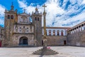
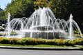
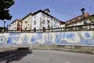
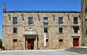
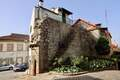
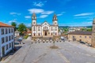
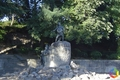

Multimédia
Nesta página encontra conteúdos multimédia
Fotografias







Vídeo
Poesia
"Poema a Viseu"
Na paz da tarde que cai,
Olho as serras do Caramulo...
A luz suave se esvai,
Num tom de rosa e granulo.
Viseu dormita no monte,
Entre a lenda e a tradição,
Sob um vasto horizonte
Que nos enche o coração.
Torres velhas da Sé erguidas,
Pedras de um tempo sem fim,
Guardam memórias vividas
Do que o tempo fez em mim.
Augusto Gil